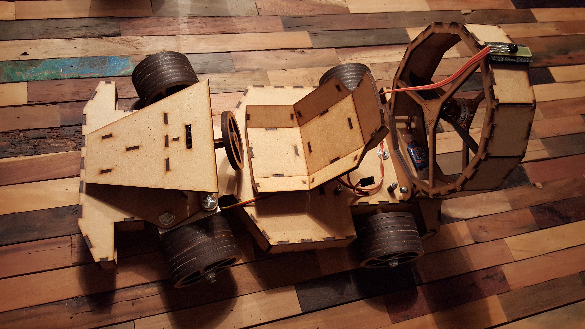
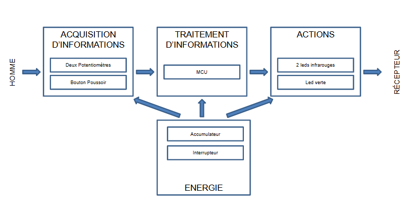
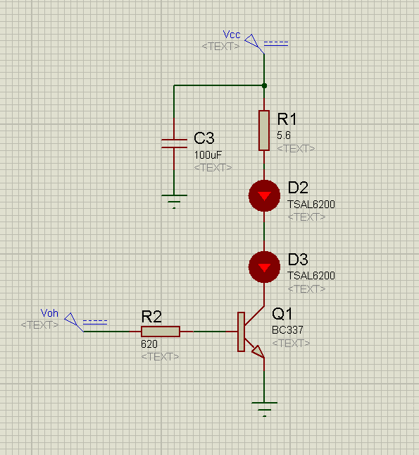
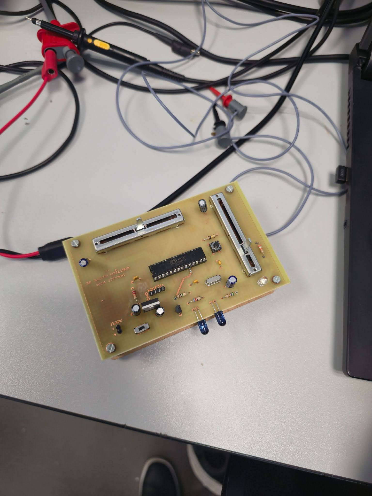
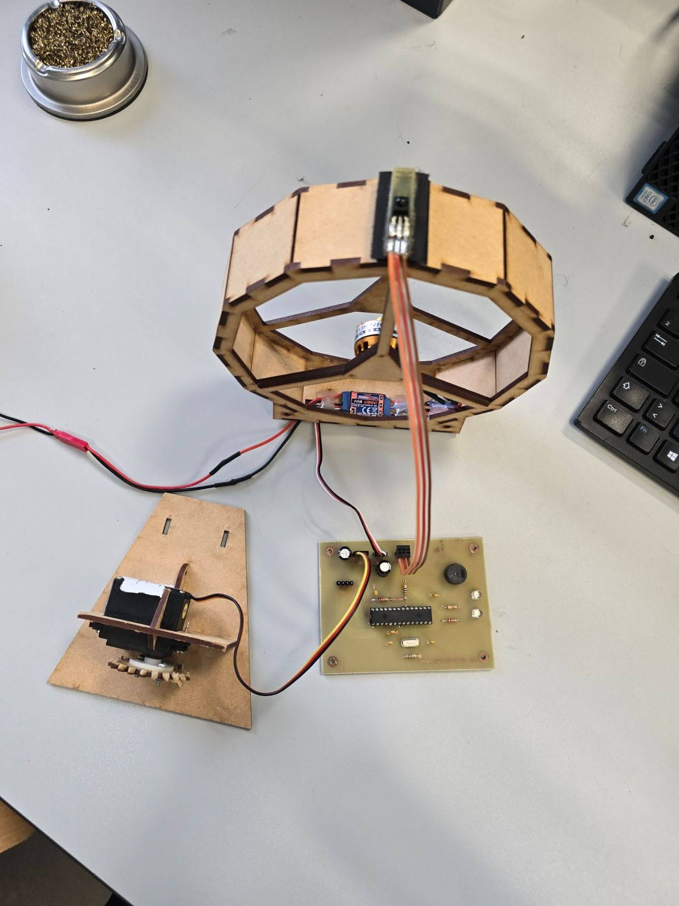
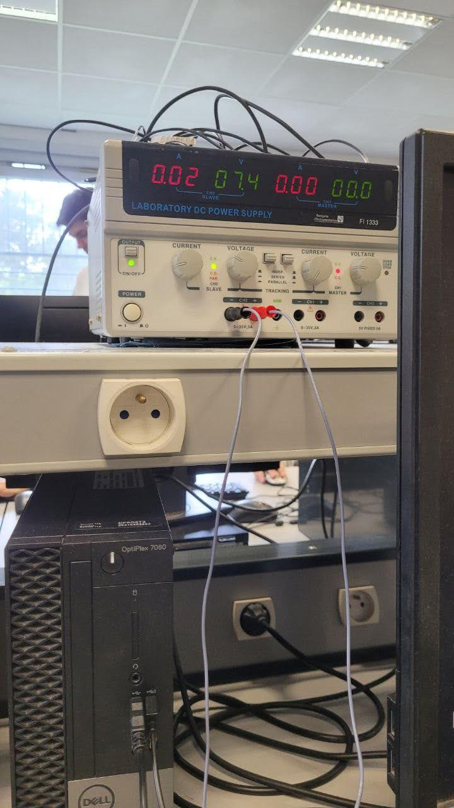
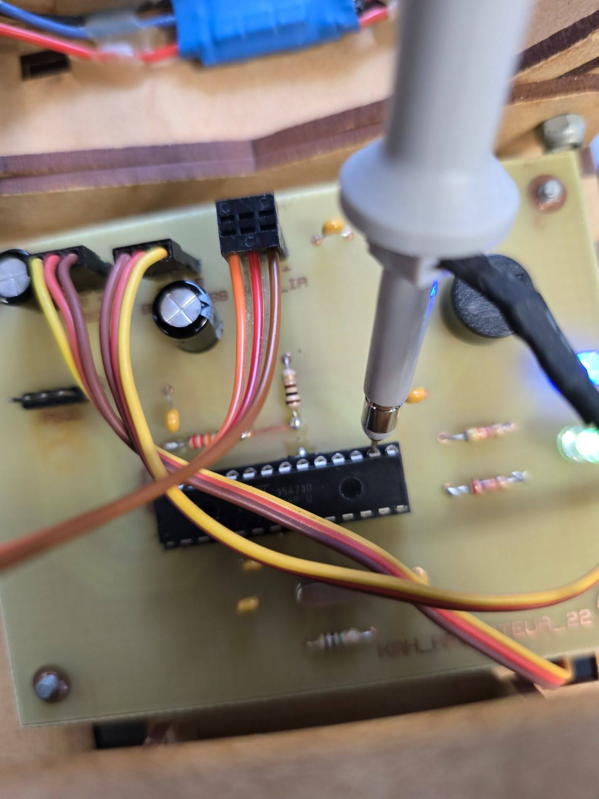
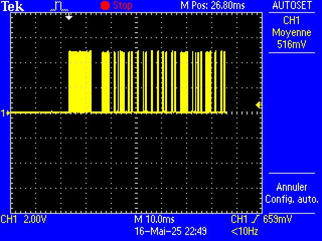
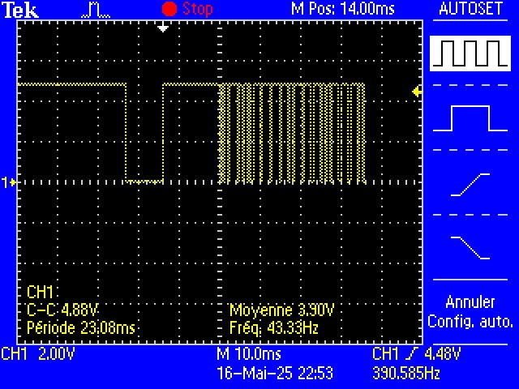

Acquisition IR
Réception des ordres via une liaison infrarouge. Décodage des trames pour extraire les consignes de vitesse e de direction.
Ce projet intègre une chaîne de puissance Brushless et une commande sans fil par protocole Infrarouge (NEC). L'objectif est de valider la réactivité du système et la sécurité logicielle en cas de perte de signal.

Réception des ordres via une liaison infrarouge. Décodage des trames pour extraire les consignes de vitesse e de direction.
Propulsion par moteur brushless et direction assurée par un servomoteur de précision.

L'exigence Puissance de la part de l'émetteur dit que les trames protocolaires sont emises à l'aide d'un composant d'émission infrarouge. Pour y répondre, nous avons sélectionné un composant d'émission infrarouge de haute quality, assurant une transmission fiable des commandes même dans des conditions de lumière variable.
Le composant choisi est la led infrarouge TSL6200. Cette led a un courant de crête de 200mA pour émettre un signal infrarouge puissant. Comme le MCU choisi ne peut pas fournir directement le courant nécessaire, nous avons choisi d'intégrer un étage amplificateur à l'aide d'un transistor.
Après avoir analysé les spécifications techniques, nous avons déterminé les valeurs de résistances nécessaires pour le bon fonctionnement du circuit d'émission et nous avons constaté qu'un condensateur est aussi necessaire pour garantir une stabilité du signal.

Dans cet essai, nous avons vérifié la capacité du récepteur à recevoir correctement les trames infrarouges émises par la télécommande. Nous avons utilisé un oscilloscope pour analyser le signal reçu et confirmer que les données étaient interprétées sans erreurs.
Nous avons également utilisé un générateur de table, la telecommande et le recepteur. À l'aide du genérateur de table, nous avons alimenté le récepteur.
Après avoir confirmé que tous les elements du circuit étaient alimentés correctement, nous avons émis des trames de test depuis la télécommande et observé les réponses du récepteur à l'oscilloscope. Les résultats ont montré une réception stable et précise des commandes, validant ainsi la fiabilité de notre solution d'émission/réception infrarouge.
Quand on étudie le fonctionnement du recepteur infrarouge, nous nous rendons compte que le signal réçu est l'enveloppe de l'inverse du signal émis. Après avoir vérifié que le signal émis était conforme au protocole NEC, nous avons confirmé que le signal reçu correspondait à nos attentes, avec une amplitude et une forme d'onde cohérentes avec les spécifications du protocole.





